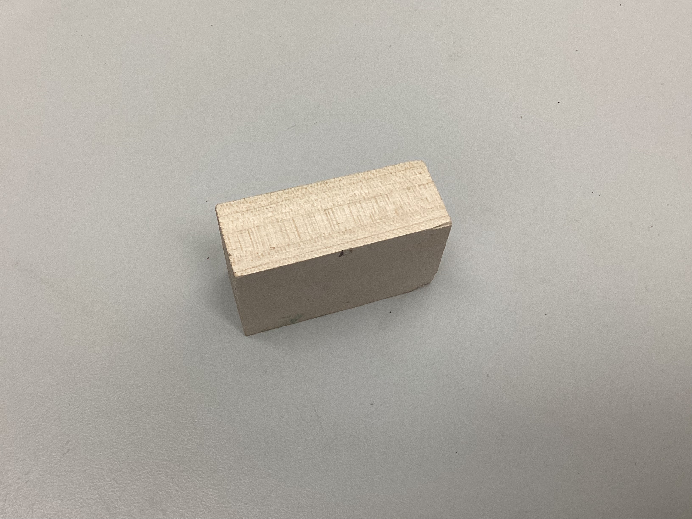
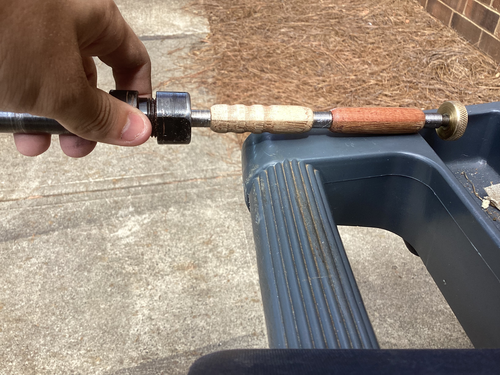
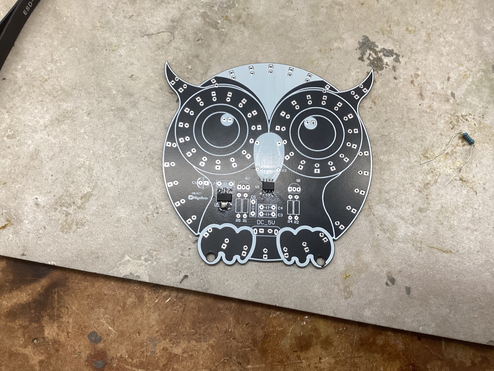
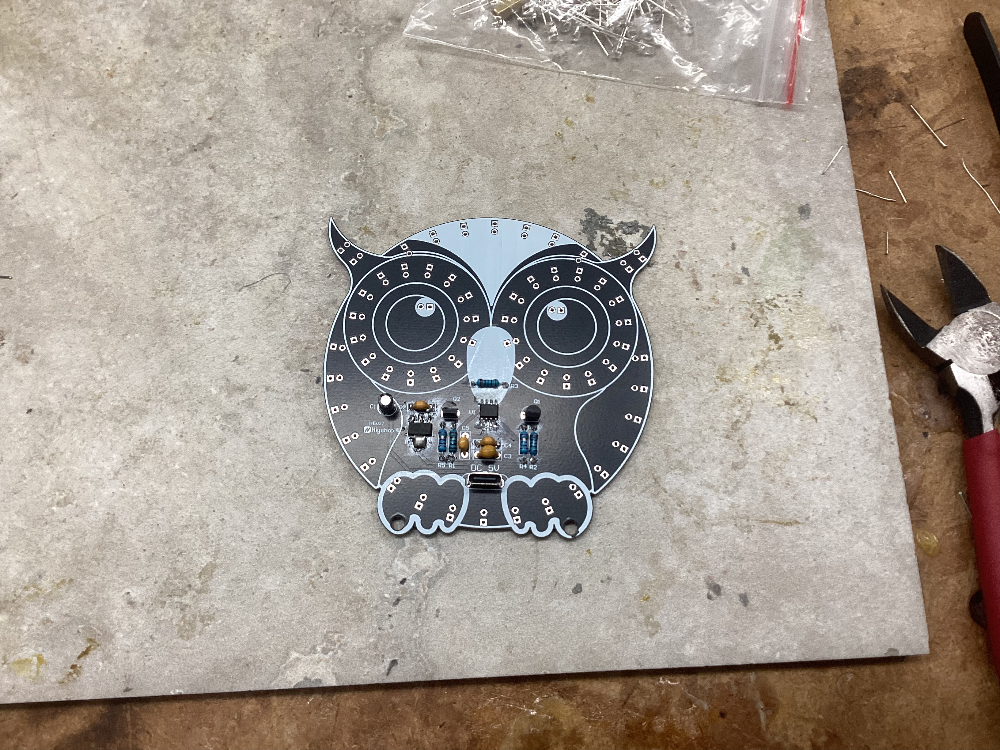
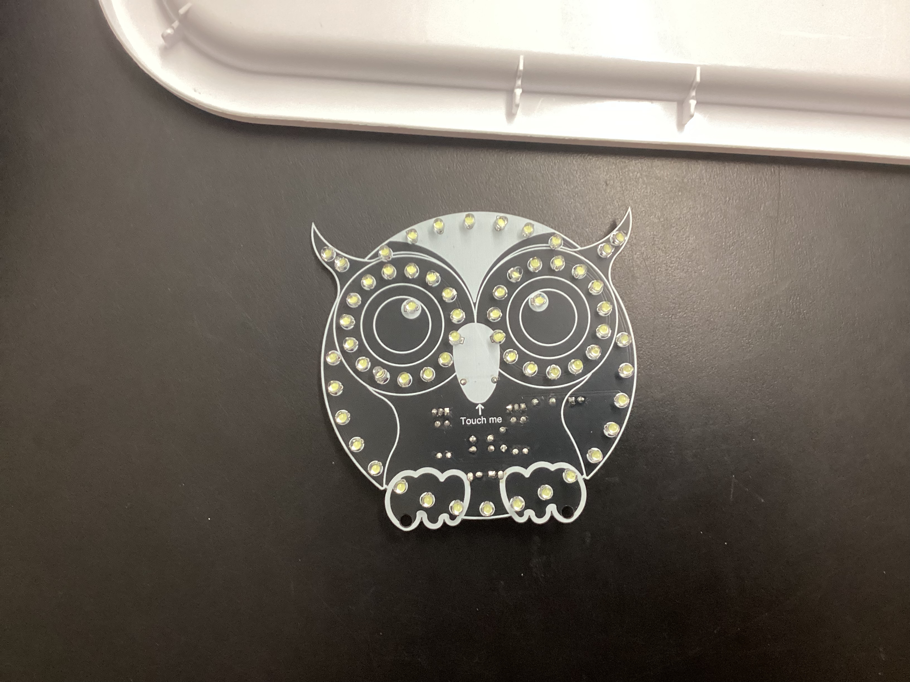
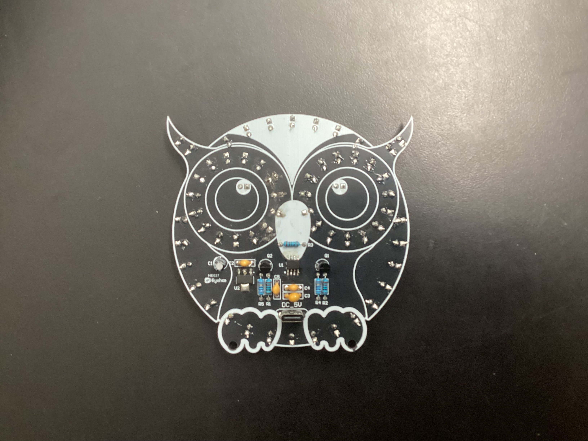
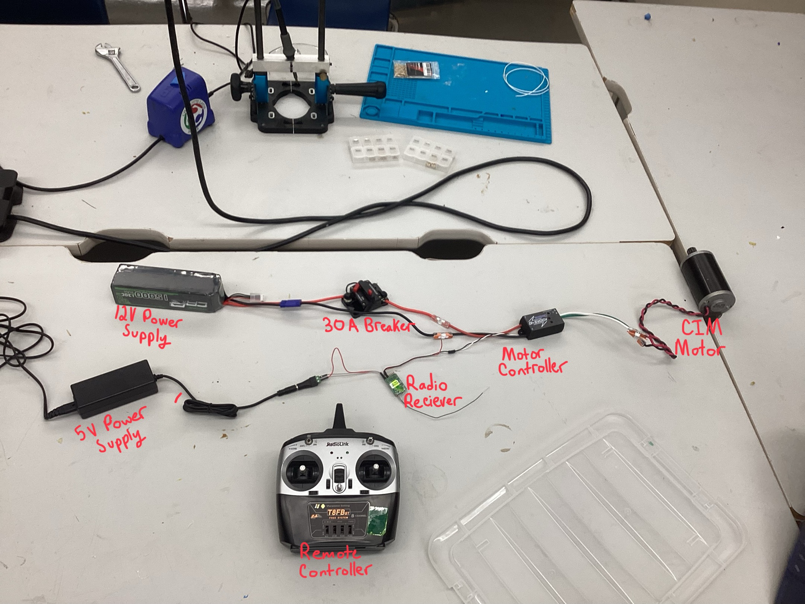

Pen Turning Activity - PreProject
Before starting my Robopack project, I created a Pen to practice using the lathe and woodshop tools in the lab. One challenge presented with this project was to build the pen using more than one type of wood per side, which turned out really pretty and I chose to choose a slightly more experimental way to do this combination.
Planning
My plan for the pen is to take 4 different types of wood, and make the pen have 4 quaters where each side a different wood could be seen. The risk with this plan is that what will hold each quaters together will be a ~1/8in thick bond of wood glue which if doesn't dry well, will let my pen fall apart. In order to try and maximize the chances of my pen staying together, I put in some extra time into the prep I describe below.
Prepping the wood blocks for the lathe
I started out by creating 2 small block segments of wood like the block segment shown below. Then I glued 2 different types of wood together with wood glue to make half of the 4 type block I desired for the final design. Once thos 2 block segments dried, I sanded them to make their edges smooth and glued them to another 2 block segmant making the final 4 block piece.

Lathe
Once the 2 blocks were done, I used the lathe with a drill attachment to drill a center hole through it all. I tried to align the hole with the point where all 4 woods touched in the center. After drilling my holes, I attached the parts to the lathe and went to work. For the lathing, I started with a flat cutter and took away a lot of material and got the general shape down. Then I switched to the rounded cutter to get nice rounded edges and finer details. Finally I used the rounded edge on the cutter to make litte indents for better grip and finger placement on the front wood segment.
One the shape was good, I went through a chronology of sandpapers to make the pen super smooth, starting at 800 grit and moving down all the way to 3000 grit, I was able to make the wood segments super smooth and nice in the hand. Finally, I used this wood polishing oil to make the wood's colors pop and preserve that really nice color that came out with the polish.
Finished Product

Soldering Activity - PreProject
Before starting my capstone project, I did a soldering activity to touch up on my soldering skills and build a fun owl light up that can be put out on halloween.
I started off the soldering by getting the surface mount components out of the way.
Surface Mount Soldering

Through Hole Soldering
Main Components soldering: 
LED Soldering:  
Final Product Video
Reflection
This project was super fun and helped me touch up my soldering skills. I was able to succsesfully create the owl and while the surface mount soldering had me struggling a bit, I was able to do it with a bit of patience and perserverance. Overall I learned about the difference between surface mount and through hole soldering which can help me decide which type to use on my capstone project.
Learning GITHUB - PreProject
What is Github
Github is a version control system used to document and store project versions. It can be super usefull when mistakes happen because you can just revert any changes and it also allows easy group collaboration. For my use, I used github to create this repo your on right now and used Github pages to host it for free as a student, which is super nice and allows the page to be visible on the internet.
Repo Situation
After learning about jerkyll templates with cooler themes than my bland mkdocs theme, I plan to switch to a more complex but cooler looking website in the future to help better navigate the parts of my project and present it more proffesionally. For now though, I am sticking with this my MKdocs template until I have finished the formating of the jerkyll template.
9/16/2025
Today, we learned about Git, Github, Github desktop, and the browser github as well. Specifically, we focused on how changes are stored in Git and the ability to create branches of the repo for development without affecting the original branch.
9/17/2025
Today, we practiced with Git and created shared Repo's with each other to practice with collaborator settings on github.
9/24/2025
Today, I decided to order the essential electronics for my project, this included the motor controllers, the batteries, and the safety mechanisms.
9/25/2025
Today, we did a soldering activity where we practiced surface mount and through hole soldering using a halloween owl kit which lights up when you touch it. The surface mount soldering, internal components, and the finished product are shown in pictures below.
9/26/2025
Outside of class today, I used the AI Claude with the Opus4.1 model to generate some starting code for my project. The programs I had made were a RP2040 Seeed program which will control the motors, and a RaspberryPi + AI Camera program which will hand the tracking aspects and math of the camera. I am using the AI formulated code as a launchpad in order to be more efficient and spend more time on customization and troubleshooting, than have to spend that time on writing the base code myself. However, to ensure I understood the code and would be able to edit and modify it, I made sure to go through each line and ensure that I understood why and what the line did, and how modifing that line of code would impact the overall preformance of the program. The initial prompts I inputed are shown below.
Prompt for RP2040 Seeed Code
write me an arduino code for a RP2040 Seeed which will take input from the usb serial coming off a raspberry pi and move 2 drive motors on my robot using pwm(like how servos are controlled) according to the directions. For input directions, there should be a heading which if is outside the middle range set by me in a variable, then the program should turn until the the heading is once again within acceptable values. Another input will be the distance from the target which also should be kept within acceptable range set by me in a variable. Lastly, have a serial monitor where I can input values for left motor and right motors to test if I want. One last thing is whenever motor powers are set, send back what has been set across the usb serial for the Pi to recieve.
Prompt for Raspberry Pi Code
can you now right me a raspberry pi program in pythong prob. that will provide these inputs needed based off a raspberry pi 5 and a raspberry pi AI camera attachment. Also have the raspberry pi host a webserver that allows the user to see the motor power assignements and camera feed. there should be a simple but neat UI for that web page pls.
10/6/2025
I have done some thinking and realized that I was going too big on the first code attempt, so I backtracked a bit back to the Raspberry Pi AI Camera Documentation, and completed the instructions as well as ran the example program:
rpicam-hello -t 0s --post-process-file /usr/share/rpi-camera-assets/imx500_mobilenet_ssd.json --viewfinder-width 1920 --viewfinder-height 1080 --framerate 30
This program worked amazing and highlighted me with a bounding box as well as providing a percentage of certanty which seemed to stay above 50% consistantly.
10/7/2025
Layouts
Today, I worked on the electrical for the robot, mainly trying to get power and control to 1 motor for testing. The layout of main power in my electrical testing setup went as such: Battery(12v 15000AmH) --> Breaker(30A) --> MotorController(Koors40 Brushed DC Motor Controller) --> Motor(CIM Motor)
Then, I had to have a seperate control setup which would tell the motor controller how to move the motor. I also had to wire up a 5V power source into the receiver because the PWM output from the motor controller didn't provide a 5V port, just signal and ground wires. The layout of the control setup went as such: Controller(Wireless RC Plane Controller) --> Reciever(RC Plane Reciever) --> MotorControllerPWM(Koors40 Brushed DC Motor Controller)
I haven't built this part yet because I chose to focus on the main power layout.
Making Connections
The main focus I had when setting up the hardware was modularity. I want to be able to replace components if I need to, or swap them out wihtout having to unsolder or cut wires, so I decided to use Wago connectors which take to unsoldered raw wire ends, and clamp down a metal plate on the wires forming a connection between the wires on both sides. These connectors worked great, but I sadly only snagged 2 from my robotics team, and I inevitablly ended up needing 4, so I put the final wiring on hold until I could get some more Wago connectors.
I also had to do some soldering to connect the battery to the whole system. I bought some EC5 Connectors off of amazon and soldered them on to 12Ga wire which allowed me to connect the battery to the breaker and the whole system.
10/8/2025
Today, I found the github repo for the rpicam-hello program and ran it as a python file which allowed me to make edits to the code itself. I then used the AI ChatGPT from OpenAI to add in code for outputing where the human is in the serial terminal. I chose to use ChatGPT because Claude didn't seem great at modifing the codes without re-writing everything and that would always end up casuing errors. ChatGPT had me edit one of the functions and everything else stayed the same so when I tested the new code, it worked great and I was able to route the output to my computer terminal temporarily, so I could see the output without another device on the other side of the serial connection.
Here is the original code: rpicam-hello
Here is the updated code which I developed with AI assistance: modified rpicam-hello
This code worked amazing and had very simular functions to the example, but a few key modifications to make it more effective and accurate for my use: - Added a stabalizing function - The data would update every frame and the bounding box would move after every update, still correct, but I don't need that much precision of 5 pixel shift to the left or whatever, so I insterted a snipet of code which only changes the detection bounding box if the center point has moved by >25 pixels, or the size has changed by 20%. This helped smooth the detection and give a more stable instruction which will be easier for the robot to follow.
- Added output to Serial for the Seeed board to receive instructions
- In order to tell the Seeed board where the person is, I outputed a formated set of data which gives the centerpoint x and y position, as well as the width and height of the bounding box. The format goes like such: x,y,w,l
- By changing the serial port from 3 to 1, which is the computers port, I was able to visualize the output on the terminal and confirm that the code was working correctly.
Video of the Code Functioning
10/9/2025
Today, I continued working on the electrical testing setup I started on 10/7/2025. I acquired 4 more Wago connectors from my robotics team and finished up the connections between the motor and the motor controller using them. After finishing the main power setup, I started building the control wiring setup. I used a 5V power supply to power a remote control plane reciever which outputs a pwm signal, used to control the motor. Then I attached the pwm signal and ground to the reciever on the throttle port of the reciever and was able to control the motor using a RC Plane Remote.
Motor Testing Setup

Video of motor moving
10/10/2025
Today, I made some orders to make sure my final product would be safer. This order mainly included anderson connectors for modular connections, 12Ga Wire spool, Power Distribution bus that will protect the 12v battery power from contacting anything, but also distribute it to 5 other places.